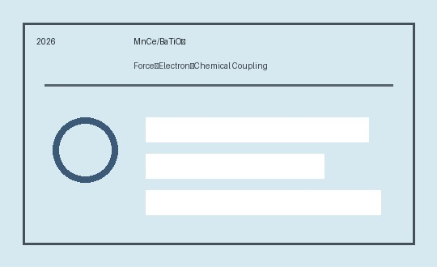

Mechanochemical Force–Electron–Chemical Coupling at MnCe/BaTiO₃ Interfaces for Synergistic Multi-Pollutant Catalysis
F. Yao, Y. Peng*, A. Cao, et al.
Journal of Colloid and Interface Science, 722 (2026) 140894.
This work reveals how mechanochemical force, interfacial electron transfer, and catalytic chemistry cooperate at MnCe/BaTiO₃ interfaces.